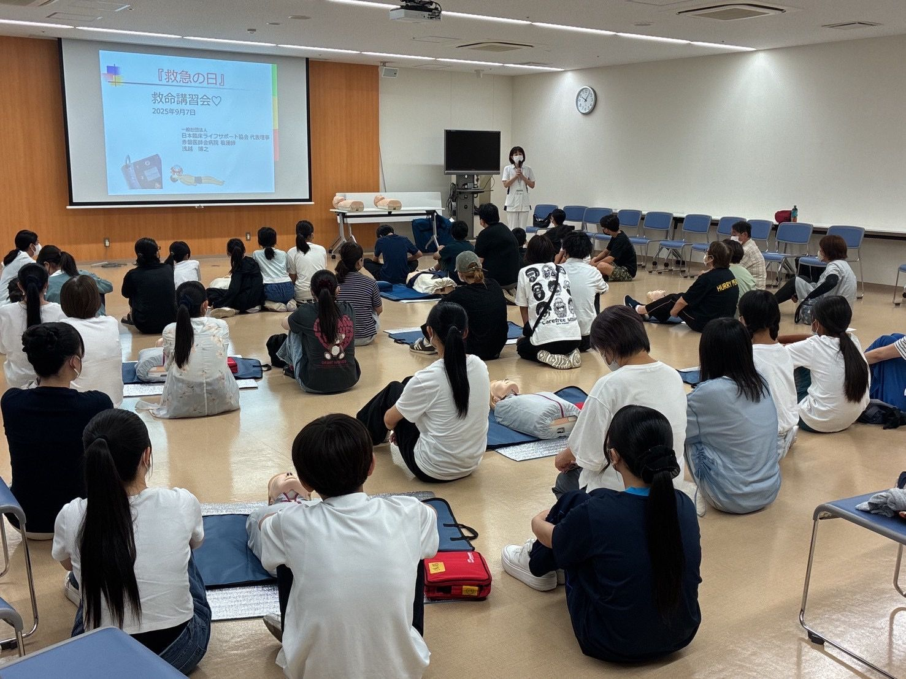

市民向け講習会
どなたでも参加できる救命講習会（胸骨圧迫・AED・窒息への対応など）の日程と、学校・企業・地域団体向けの出張講習のご案内です。医療従事者向けの研修はINARSコースをご覧ください。
開催予定の講習会
- 1下の一覧から、参加したい日程・会場を選ぶ
- 2「申し込む」ボタンから、申込フォームに入力する
- 3当日、会場へ。動きやすい服装でお越しください
「受付準備中」の講習会は、申込方法が決まり次第このページとLINE公式アカウントでお知らせします。
講習プラン
学校・企業・地域団体・スポーツチームなどへの出張講習も承ります。人数や会場に合わせてご相談ください。
救命サポーター ベーシック
胸骨圧迫とAEDの使い方を中心に、「その場で動ける」ための基本を短時間で身につけるコースです。
- 受講料
- ご相談ください
- 対象
- どなたでも（学校・企業・地域団体など）
救命サポーター スタンダード
普通救命講習Ⅰと同等のカリキュラム・時間で行うコース。日本防災士機構より、防災士資格取得のための救命講習として認められています。
- 受講料
- ご相談ください
- 対象
- 防災士を目指す方、職場で救命の役割を担う方など
プロジェクト市民の方・学生向けの救命講習。胸骨圧迫とAEDで「最初の一歩」を。
急変回避医療・介護・看護教育向け。心停止を未然に防ぐ臨床ライフサポート研修。
出張講習のご依頼方法
お問い合わせ
メールまたはLINEで、ご希望の日時・人数・会場・対象の方（年齢や職種）をお知らせください。
内容のご相談
目的や時間に合わせて、プランと講習内容をご提案します。資器材は当協会でご用意します。
講習当日
医療の専門職が伺い、実技中心で指導します。受講後の修了証の発行もご相談ください。
よくあるご質問
医療の知識がなくても参加できますか？
はい。はじめての方を対象に、看護師など医療の専門職が基本から指導します。
参加費はかかりますか？
講習会ごとに「開催予定の講習会」に記載しています。市民向けの公開講習会は無料で開催しています。
服装や持ち物は？
動きやすい服装でお越しください。
修了証はもらえますか？
受講修了証を交付している講習会があります。各講習会の案内をご確認ください。
職場や学校、チームで受けたいのですが。
出張講習を承ります。出張講習のご依頼から、ご希望の日時・人数・会場をお知らせください。
これまでの講習会

救急の日 救命講習会（奉還町会場）
奉還町の火災復興チャリティーイベントとあわせて開催しました。
会場：岡山TONKAN（岡山市北区奉還町）
救急の日 救命講習会（岡山西川会場）
胸骨圧迫・AED・小児の窒息対応を学ぶ無料講習。岡山大学病院 小児救急科 共催。
会場：西川アイプラザ 会議室2（岡山市）
救急の日記念 赤磐救命救急2026
胸骨圧迫・AED・小児の窒息対応を学ぶ無料講習。受講修了証を交付。
会場：赤磐医師会病院 4階会議室（岡山県赤磐市下市187-1）
【赤磐市】クリスマスの願いを叶える年末年始救命講習会
心肺蘇生法・AED・窒息対応を演習形式で学びました。
会場：赤磐医師会病院 4階会議室（岡山県赤磐市下市187-1）
市民のための救命講習会（おかやまマラソン関連）
心肺蘇生法とAEDの使い方を実践形式で学びました。
会場：シゲトーアリーナ岡山（岡山市北区いずみ町2-1-3）